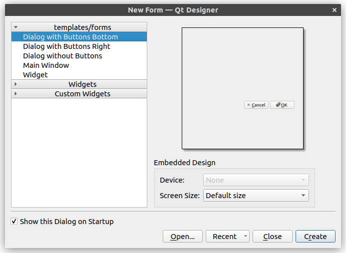

Harjoitus 6: Buffer- työkalu
Harjoituksen tarkoituksena on luoda yksinkertainen työkalu, jolla voi valita vektoritason ja luoda sen pohjalta uusi taso, jonka kohteille on luotu vyöhyke (buffer). Työkalulle tehdään dialogikäyttöliittymä, jossa voidaan valita lähdetaso, vyöhykkeen etäisyys ja vyöhykkeen segmenttien määrä.
Alla havainnollistava esimerkkivideo työkalun ominaisuuksista:

Harjoitus 6.1: Käyttöliittymän suunnittelu
Kuten kappaleessa 4 opittiin, käyttöliittymiä voi luoda ohjelmallisesti kirjoittamalla koodia. Etenkin monimutkaisten käyttöliittymien suunnittelu ja toteutus tällä tavalla voi kuitenkin olla hankalaa. Qt tarjoaa tähän ongelmaan ratkaisuksi Qt Designer -ohjelman, jolla käyttöliittymiä voi suunnitella graafisesti. Sillä rakennetaan käyttöliittymä, joka voidaan tallentaa .ui-tiedostoksi, jota voidaan käyttää osana lisäosaa. Windowsilla Qt Designer kuuluu yleensä QGIS-asennukseen, ja sen voi avata hakemalla sitä nimellä.
Luodaan aluksi minimaalinen käyttöliittymä ja yhdistetään se lisäosaan. Avaa Qt Designer, jolloin pitäisi avautua seuraavanlainen valikko:

Valitse pohjaksi Dialog with Buttons Bottom ja paina Create. Seuraavaksi vaihda oikeasta yläkulmasta “Object Inspector”-valikosta QDialog-olion nimeksi BufferToolDialog ja lopuksi muokkaa buttonBox-oliota siten, että poistetaan OK- painike. Valitse buttonBox-olio ja skrollaa Object Inspectorin alapuolella olevaa Property Editoria alas, kunnes näet QDialogButtonBox-luokan ominaisuudet. Täältä avaamalla standardButtons-valikon pystyy kontrolloimaan eri painikkeita. Kaksoisklikkaa OK-painike pois.

Tallenna käyttöliittymätiedosto aiemmin luodon lisäosakansion polkuun
test-plugin/testplugin/resources/ui/buffer_tool.ui.
On hyvä tallentaa tiedosto juuri tähän sijaintiin, koska lisäosassa pian käytettävä qgis_plugin_tools-paketti pystyy hakemaan kyseisen polun helposti.
Harjoitus 6.2: Käyttöliittymän kytkeminen lisäosaan
Seuraavaksi muokataan lisäosaa siten, että saadaan käyttöliittymä avattua QGISin kautta.
Määritellään ensin äsken luodulle dialogille oma luokka, joka perii QDialog-luokan.
- Luo
test-plugin/testplugin/ui-kansioon__init.py__jabuffer_tool_dialog.pytiedostot. - Jätä
__init.py__tyhjäksi. - Kopioi
buffer_tool_dialog.py:hyn koodi:
import logging
from typing import Optional
from qgis.PyQt.QtWidgets import (
QDialog,
QWidget,
)
from testplugin.qgis_plugin_tools.tools.resources import load_ui, plugin_name
FORM_CLASS: QWidget = load_ui("buffer_tool.ui")
LOGGER = logging.getLogger(plugin_name())
class BufferToolDialog(QDialog, FORM_CLASS):
def __init__(self, parent: Optional[QWidget] = None) -> None:
"""Constructor."""
super().__init__(parent)
self.setupUi(self)Avaa seuraavaksi test-plugin/testplugin/plugin.py tiedosto. Lisää import-komentoihin:
from testplugin.ui.buffer_tool_dialog import BufferToolDialogTiedostossa pitäisi olla seuraava import-komento valmiina. Lisää loppuun import
tr() komennolle:
from testplugin.qgis_plugin_tools.tools.i18n import setup_translation, tr # lisää 'tr'Kyseessä on funktio, joka riippuen valitusta kielestä vaihtaa merkkijonot
vastaamaan valitun kielen käännöstä. Jos lisäosaan halutaan eri käännöksiä,
tr-funktiota tulee käyttää kaikille merkkijonoille, jotka näkyvät tavalla tai
toisella lisäosan käyttöliittymässä.
Seuraavaksi etsi Plugin-luokan koodista initGui()-funktio. Muokkaa self.add_action-funktiokutsua:
self.add_action(
"",
text=tr("Buffer Tool"),
callback=self.open_buffer_tool,
parent=iface.mainWindow(),
add_to_toolbar=False,
)Tässä määritetään QGISin plugin-valikkoon lisättäviä QAction-widgettejä. Lisäosapohjassa oletuksena lisätään QGISin Lisäosat-ylävalikkoon valikko lisäosalle. Tässä määritellään painikkeet, jotka lisätään lisäosan nimeä kantavaan valikkoon.

Järjestyksessä argumenttien merkitys:
- Polku ikoniin. Tässä jätetty tyhjäksi.
- Painikkeen teksti.
- Callback. Funktio, joka kutsutaan kun painiketta klikataan.
- Parent. Lisätään QGISin pääikkunaan.
- Lisätäänkö työkalupainike myös työkalupalkkiin? Tässä tapauksessa ei.
Määritellään lopuksi open_buffer_tool()-funktio, johon äsken viitattiin.
Etsi lopusta run()-metodi, jonka voi poistaa ja sen tilalle kirjoittaa
uuden funktion:
def open_buffer_tool(self) -> None:
"""Opens buffer tool dialog"""
BufferToolDialog().exec()Muista ajaa komentorivillä:
python build.py deployLataa lisäosa uudelleen Plugin Reloaderilla. Nyt Lisäosat-valikosta pitäisi löytyä Test Plugin valikosta uusi vaihtoehto Buffer Tool, jota klikatessa avautuu aikaisemmin luotu käyttöliittymä.
Harjoitus 6.3: Työkalun toiminta
Lisää seuraavaksi Qt Designerissa käyttöliittymän tarvittavat komponentit. Vasemmalla näkyy listaus erilaisista Widgeteistä, jota käyttöliittymään voi lisätä.
Voit noudattaa esimerkiksi seuraavia askelia. Vedä vasemmalta dialogiin Horizontal Layout. Voit kasvattaa sen kokoa hieman. Seuravaaksi vedä ja pudota layoutiin Label-widget. Seuraavaksi raahaa layoutiin oikealle puolelle QgsMapLayerComboBox.

Kaksoisklikkaa Label-widgettiä ja kirjoita tekstiksi Layer.
Vaihda QgsMapLayerComboBox-olion nimeksi layerComboBox.
Halutessasi voit myös vaihtaa QLabel-olion nimen.
Toista äskeiset askeleet siten, että lopulta käyttöliittymässä on seuraavat komponentit Labeleineen:

- Layer: QgsMapLayerComboBox (nimi: layerComboBox)
- Buffer Distance: QgsDoubleSpinBox (nimi: distanceSpinBox)
- New layer name: QLineEdit (nimi: newLayerLineEdit)
- QPushButton (nimi: newLayerPushButton, painikkeen teksti: Create new layer)
Järjestele komponentit esimerkiksi allekkain ja lopuksi voit määrittää koko BufferToolDialog-oliolle layoutin klikkaamalla hiiren oikealla sen taustaa:

Kun nämä muutokset on tehty, voidaan kirjoittaa lisäosan varsinainen
toiminta askelittain. Organisoidaan lisäosan koodi siten, että lisäosan
käyttöliittymän toiminta on määritelty test-plugin/testplugin/ui-kansion
tiedostoissa. Varsinainen työkalun toiminta määritellään kuitenkin
test-plugin/testplugin/core-kansiossa.
- Luo kyseinen kansio ja lisää sinne tyhjä
__init__.pytiedosto. - Luo kansioon myös
buffertool.py-tiedosto ja lisää seuraava koodi:
from qgis.core import (
QgsVectorLayer,
)
class BufferTool:
@staticmethod
def create_buffer_layer(src_layer: QgsVectorLayer, buffer_distance: float, new_layer_name: str, segments: int) -> Optional[QgsVectorLayer]:
print("Creating buffer layer")Toistaiseksi määritetään create_buffer_layer() vain tulostamaan
viestin, lisätään varsinainen toiminto hieman myöhemmin. Määritetään
metodi dekoraattorilla @staticmethod, joka tarkoittaa että meidän
ei tarvitse luoda BufferTool-luokasta oliota.
Muokkaa nyt test-plugin/testplugin/ui/buffer_tool_dialog.py-tiedostoa:
Lisää import-komentoihin:
from testplugin.core.buffertool import BufferTool
from qgis.core import QgsMapLayerProxyModelLisää BufferToolDialog-luokan konstruktoriin (__init__-metodi):
self.layerComboBox.setFilters(
QgsMapLayerProxyModel.PointLayer |
QgsMapLayerProxyModel.PolygonLayer |
QgsMapLayerProxyModel.LineLayer
)
self.newLayerPushButton.clicked.connect(self._create_buffer_layer)Tässä lisätään layerComboBox-oliolle suodatin, jolloin se näyttää vain
piste-, viiva- ja polygonitasot. Lisäksi yhdistetään painikkeen
clicked-signaali seuraavaksi määritettävään _create_buffer_layer-metodiin.
Lisää uusi metodi dialogiluokalle:
@log_if_fails
def _create_buffer_layer(self) -> None:
selected_layer = self.layerComboBox.currentLayer()
buffer_distance = self.distanceSpinBox.value()
new_layer_name = self.newLayerLineEdit.text()
segments = 5 # tähän palataan myöhemmin
new_layer = BufferTool.create_buffer_layer(
selected_layer,
buffer_distance,
new_layer_name,
segments
)
if new_layer is not None:
QgsProject.instance().addMapLayer(new_layer)Tässä haetaan widgeteistä tarvittavat tiedot ja kutsutaan aikaisemmin määritetystä BufferTool-luokasta metodia argumenteilla.
Koodin organisointi eri luokkiin ui ja core kansioihin saattaa tuntua ainakin näin yksinkertaisessa lisäosassa tarpeettoman monimutkaiselta. Sillä on kuitenkin etunsa, näin voidaan pitää käyttöliittymän toiminta ja vyöhykkeen luominen erillään, joka helpottaa myös testien kirjoittamista.
Kokeile tässä vaiheessa, että työkalu toimii odotetusti. Muista jälleen päivittää muutokset:
python build.py deployLataa QGISissä lisäosa uudestaan Plugin Reloaderilla. Create new layer -painiketta klikatessa Python-konsoliin pitäisi ilmestyä viesti.
Kirjoitetaan sitten lopulta varsinainen vyöhyketyökalu. Muokkaa
test-plugin/testplugin/core/buffertool.py-tiedostoa:
from typing import Optional
from testplugin.qgis_plugin_tools.tools.i18n import tr
from testplugin.core.exceptions import BufferToolException
from qgis.core import (
QgsFeature,
QgsProject,
QgsVectorLayer,
QgsWkbTypes,
)
from testplugin.qgis_plugin_tools.tools.custom_logging import bar_msg
class BufferTool:
@staticmethod
def create_buffer_layer(src_layer: QgsVectorLayer, buffer_distance: float, new_layer_name: str, segments: int) -> Optional[QgsVectorLayer]:
if src_layer.featureCount() == 0:
raise BufferToolException(
tr("Buffer Tool"),
bar_msg=bar_msg(tr("Could not create buffer layer. Source layer has no features"))
)
src_geom_type = QgsWkbTypes.displayString(src_layer.wkbType()).lower()
new_geom_type = 'MultiPolygon' if 'multi' in src_geom_type else 'Polygon'
crs = src_layer.crs().authid()
geom_string = f"{new_geom_type}?crs={crs}"
buffer_layer = QgsVectorLayer(geom_string, new_layer_name, "memory")
buffer_layer.startEditing()
src_fields = src_layer.fields()
for field in src_fields:
buffer_layer.addAttribute(field)
for feature in src_layer.getFeatures():
old_geom = feature.geometry()
new_geom = old_geom.buffer(buffer_distance, segments)
new_feature = QgsFeature(feature)
new_feature.setGeometry(new_geom)
buffer_layer.addFeature(new_feature)
buffer_layer.updateFields()
buffer_layer.commitChanges()
return buffer_layerKoodissa käytetään BufferToolException-poikkeusta, jota ei ole vielä
olemassa. Luo tiedosto test-plugin/testplugin/core/exceptions.py ja
lisää sinne seuraava koodi:
from testplugin.qgis_plugin_tools.tools.exceptions import QgsPluginException
class BufferToolException(QgsPluginException):
passHarjoitus 6.4: Segmentit
Kun geometrialle luodaan vyöhyke on yhtenä parametrina segmentit, joka vaikuttaa siihen kuinka paljon vyöhykkeelle lisätään taitepisteitä.
Oppimasi perusteella tee lisäosaan vaihtoehto määrittää segmenttien määrä käyttöliittymässä ja muokkaa koodia siten, että se huomioidaan vyöhykkeitä luodessa.
Käyttöliittymässä voit käyttää QgsSpinBox-widgettiä.
Yksikkötestit
Ohjelmoinnissa on tärkeää kirjoittaa testejä ja lisäosat eivät ole poikkeus. Lisäosien testaamiseen voidaan käyttää pytest-pakettia.
Testien kirjoittaminen toimii siten, että
test-plugin/tests-kansioon luodaan test_-alkuinen
Python-tiedosto. Tiedostoon kirjoitetaan testifunktioita, joissa
käytetään lisäosassa olevia luokkia ja funktioita. Lopuksi testataan
saadaanko niistä odotetut tulokset. Testit voi ajaa komentoriviltä
pytest komennolla, olettaen että olet test-plugin/testplugin-kansiossa.
Testaus on kuitenkin integroitu myös VSCodeen, josta testit voi ajaa myös käyttöliittymän kautta, kuten edellisessä harjoituksessa nähtiin.
Testejä varten voidaan luoda ns. fixtuureja, jotka ovat
funktioita, joka palauttaa jonkin arvon tai olion. Näiden avulla voidaan
määritellä esimerkiksi valmiiksi QGISin taso, jota voidaan sitten
hyödyntää useammassa testeissä. Fixtuurit voi määrittää testikansiossa
olevaan conftest.py-tiedostoon.
On olemassa myös ohjelmointikäytäntö (ns. test-driven development), jossa ominaisuuksille kirjoitetaan ensin testi ja implementoidaan toiminta vasta sen jälkeen. Tällä kurssilla asia on tehty toisin päin, ajatuksena on ollut se että on selkeämpää päästä näkemään lisäosa ja sen käyttöliittymä toiminnassa ensin ennen testien kirjoittamista.
Harjoitus 6.5: Testit
Määritellään ensin fixtuurit testeille, avaa test-plugin/tests/conftest.py
ja lisää seuraavat fixtuurit:
import pytest
from qgis.core import (
QgsFeature,
QgsField,
QgsFields,
QgsGeometry,
QgsPointXY,
QgsVectorLayer,
)
from qgis.PyQt.QtCore import QVariant
from testplugin.ui.buffer_tool_dialog import BufferToolDialog
@pytest.fixture
def dialog():
return BufferToolDialog(None)
@pytest.fixture
def point() -> QgsGeometry:
return QgsGeometry.fromPointXY(QgsPointXY(0.0, 0.0))
@pytest.fixture
def line() -> QgsGeometry:
return QgsGeometry.fromPolylineXY(
[
QgsPointXY(0.0, 0.0),
QgsPointXY(1.0, 0.0),
]
)
@pytest.fixture
def square() -> QgsGeometry:
return QgsGeometry.fromPolygonXY(
[
[
QgsPointXY(0.0, 0.0),
QgsPointXY(1.0, 0.0),
QgsPointXY(1.0, 1.0),
QgsPointXY(0.0, 1.0),
]
]
)
@pytest.fixture
def fields() -> QgsFields:
fields = QgsFields()
fields.append(QgsField("fid", QVariant.Int))
return fields
@pytest.fixture
def point_feature(fields, point) -> QgsFeature:
feature = QgsFeature(fields)
feature.setGeometry(point)
feature.setAttribute("fid", 1)
return feature
@pytest.fixture
def square_feature(fields, square) -> QgsFeature:
feature = QgsFeature(fields)
feature.setGeometry(square)
feature.setAttribute("fid", 1)
return feature
@pytest.fixture
def line_feature(fields, line) -> QgsFeature:
feature = QgsFeature(fields)
feature.setGeometry(line)
feature.setAttribute("fid", 1)
return feature
@pytest.fixture
def point_layer(fields, point_feature) -> QgsVectorLayer:
layer = QgsVectorLayer("Point?crs=epsg:4326&index=yes", "test_points", "memory")
provider = layer.dataProvider()
provider.addAttributes(fields)
layer.updateFields()
provider.addFeature(point_feature)
layer.updateExtents()
return layer
@pytest.fixture
def square_layer(fields, square_feature) -> QgsVectorLayer:
layer = QgsVectorLayer("Polygon?crs=epsg:4326&index=yes", "test_polygon", "memory")
provider = layer.dataProvider()
provider.addAttributes(fields)
layer.updateFields()
provider.addFeature(square_feature)
layer.updateExtents()
return layer
@pytest.fixture
def line_layer(fields, line_feature) -> QgsVectorLayer:
layer = QgsVectorLayer("LineString?crs=epsg:4326&index=yes", "test_line", "memory")
provider = layer.dataProvider()
provider.addAttributes(fields)
layer.updateFields()
provider.addFeature(line_feature)
layer.updateExtents()
return layerHarjoitus 6.5.1: Käyttöliittymätesti
Kirjoitetaan yksinkertainen testi lisäosan dialogille. Luo uusi
tiedosto test-plugin/tests/test_buffer_tool_dialog.py:
from qgis.PyQt.QtWidgets import QDialog, QDialogButtonBox
def test_dialog_close(dialog):
"""Test we can close the dialog."""
button = dialog.buttonBox.button(QDialogButtonBox.Close)
button.click()
result = dialog.result()
assert result == QDialog.RejectedLopussa esitetään väittämä assert. Jos lausekkeen tulos on
False, testi ei mene läpi.
Harjoitus 6.5.2: BufferTool-testi
Seuraavaksi tehdään testit varsinaiselle BufferTool-luokalle.
Luo uusi tiedosto test-plugin/tests/test_buffer_tool.py:
from qgis.core import QgsWkbTypes
from testplugin.core.buffertool import BufferTool
def test_create_buffer_layer_polygon(square_layer):
buffer_distance = 1.0
new_layer_name = "Test buffer layer"
segments = 1
buffer_layer = BufferTool.create_buffer_layer(
square_layer,
buffer_distance,
new_layer_name,
segments,
)
buffered_feature = buffer_layer.getFeature(1)
expected_geometry = "Polygon ((-1 0, -1 1, 0 2, 1 2, 2 1, 2 0, 1 -1, 0 -1, -1 0))"
assert buffered_feature.geometry().asWkt(2) == expected_geometry
assert buffer_layer.featureCount() == 1
assert buffer_layer.crs().authid() == "EPSG:4326"
assert buffer_layer.wkbType() == QgsWkbTypes.PolygonHuomaa, että tässä testifunktiossa argumentiksi annetaan fixtuuri square_layer. Pytest hoitaa argumenttien lähettämisen testifunktioille automaattisesti. Testissä määritellään parametrit funktiolle, joka luo vyöhyketason. Geometrioita testatessa on kätevää käyttää WKT-formaattia. Lopuksi määritellään geometria, jota odotetaan funktion tuottavan ja testataan saatiinko oikea tulos. Lisäksi voidaan testata, että funktio ei lisää ylimääräisiä kohteita tai muuta tason koordinaattijärjestelmää tai geometriatyyppiä.
Harjoitus 6.5.3: Lisää testejä
Seuraavaksi oppimasi perusteella kirjoita BufferToolille vastaavat testit piste- sekä viivatasolle.
Mallilisäosa
Voit tarvittaessa tarkastella mallilisäosan koodia seuraavista linkeistä:
Mallilisäosan paketin nimi on sampleplugin. Tämä
tulee huomioida import-komennoissa.
test-plugin/testplugin/plugin.py
test-plugin/testplugin/ui/buffer_tool_dialog.py
test-plugin/testplugin/core/buffertool.py
test-plugin/testplugin/core/exceptions.py
test-plugin/tests/conftest.py
test-plugin/tests/test_buffer_tool_dialog.py
test-plugin/tests/test_buffer_tool.py
test-plugin/testplugin/resources/ui/buffer_tool.ui